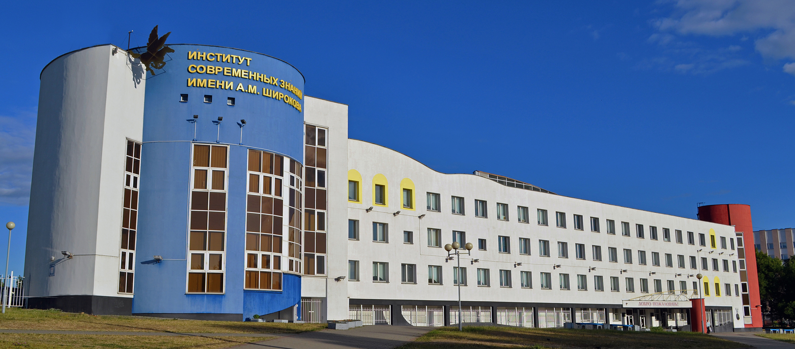

Institute ofModern Knowledge
Named after A. M. Shirokov — one of the first private universities in Belarus, built around art, design and communication.
A private university
with a creative core.
A humanities-and-arts institute in the Belarusian capital, focused on specialists in culture, creative industries and communication.
From a bold idea
to a named institute.
The institute is founded, among the first non-state higher education institutions in Belarus.
Aleksandr M. Shirokov — Doctor of Technical Sciences, professor, corresponding member of the National Academy of Sciences of Belarus.
Renamed by a Minsk City Executive Committee decision: “Institute of Modern Knowledge named after A. M. Shirokov”.
The goal: develop non-state higher education and train specialists who can work across many professional fields.
Five directions,
one creative idea.
Art & Music
Pop performance and music creation.
Design
Graphic, multimedia and environmental design.
Humanities
Culturology and socio-cultural activity.
Languages
Foreign languages and intercultural communication.
Management
Managing cultural and creative projects.
These directions combine creative ability, professional knowledge and practical skills.
Two faculties.
Two ways to create.
Faculty of Arts
- Musical art
- Design
- Artistic creativity
- Producing
Faculty of Humanities
- Culturology
- Intercultural communication
- Foreign languages
- Socio-cultural management
Not only theory —
practice and independence.
Special attention goes to a creative approach and to students’ independence.
Where students
take part.
Scientific & practical conferences
Educational projects
Creative competitions
Exhibitions & cultural events
International academic cooperation
International scientific and practical conference “Culture, Art and Communications in Modern Conditions”
The institute took part in organizing the event.
What graduates
can become.
Design
- Graphic designer
- Multimedia designer
Music & production
- Musician or vocalist
- Music teacher
- Creative project producer
Culture & communication
- Intercultural communication specialist
- Culture and arts manager
- Event organizer
- Advertising & media specialist
Specific career options depend on the chosen specialty and qualification.
Find us in Minsk.

Why it matters
in Belarusian education.
A distinct blend
Humanities and creative education combined in one institute.
Professional knowledge
Art, design, languages, communication and cultural project management.
Creative potential
Helps young specialists develop their talent and independence.
Creativity,
culture, communication.
A university with a history that began in 1990 — for those who want to link their future profession with creativity, culture and communication.
Thank you